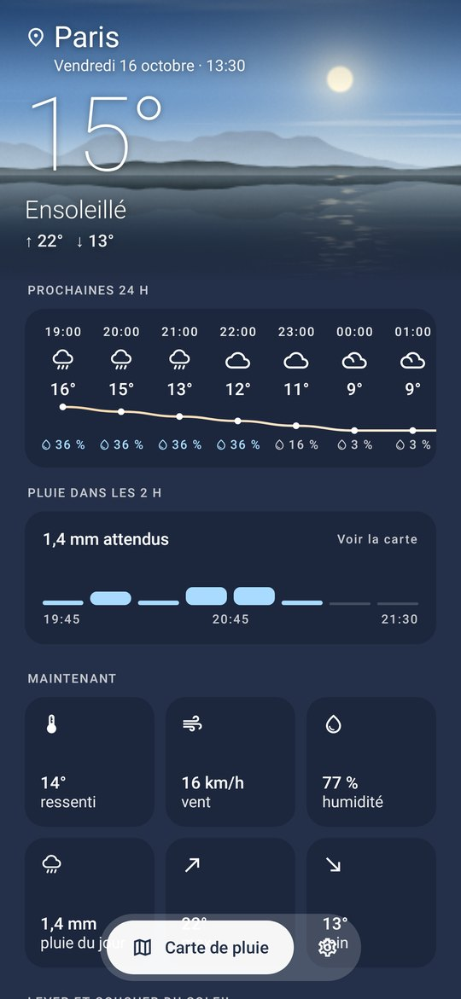
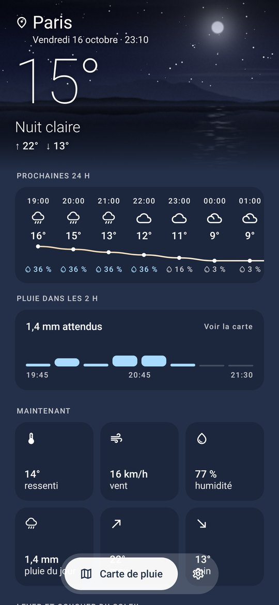
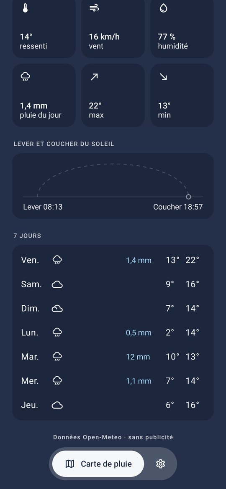
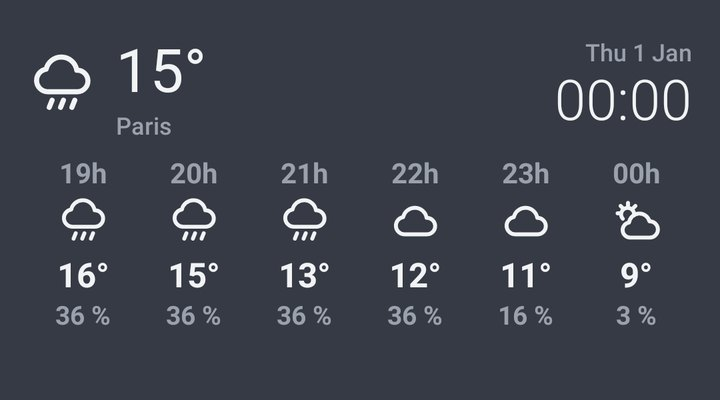
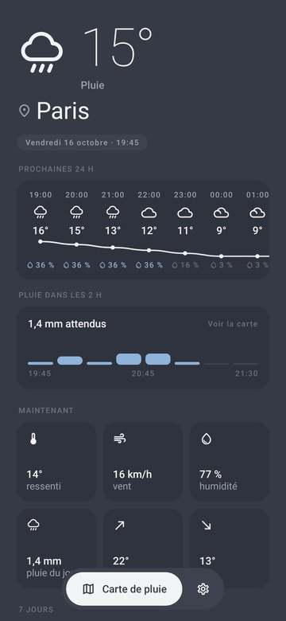
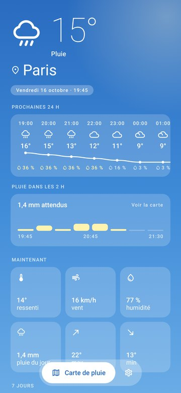
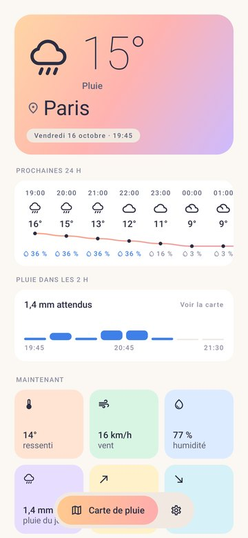
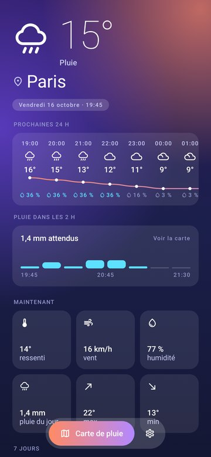
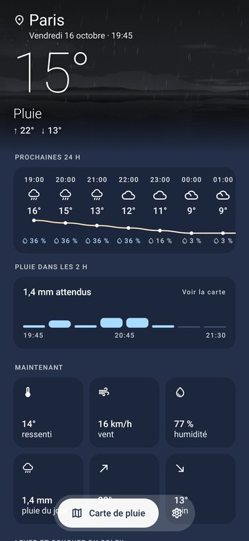

Ce que fait l'appli
◎
Votre position
GPS par défaut, plus vos lieux enregistrés.
☂
Pluie au quart d'heure
Modèles haute résolution (AROME, ICON) et alerte quand la pluie arrive dans l'heure.
▦
Carte de pluie
Radar observé, prévision animée et fluide, nuages satellite Meteosat, carte des vents.
▢
Six widgets
De la pastille 2×1 à la carte de pluie, chacun avec son fond et sa transparence.
◐
Thèmes
Ardoise, Ciel, Pastel, Aurore et Nature, dont le paysage suit l'heure et le temps qu'il fait.
◌
Zéro publicité
Aucun SDK publicitaire ni pistage, code ouvert, mises à jour automatiques depuis GitHub.
Le thème Nature



Widgets


Cinq thèmes




